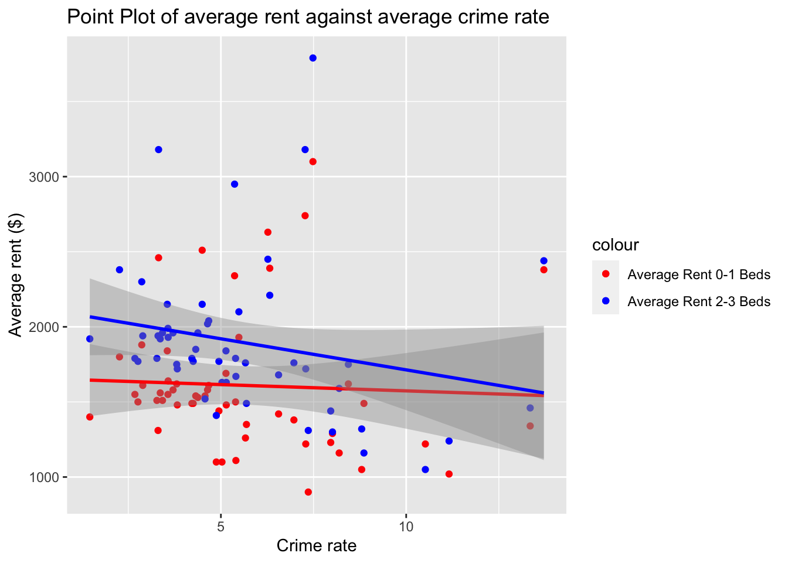

#Import and clean socio-economic data. neighbor_SES has SES indicators (except rent) for each neighborhood
neighbor_ses = readxl::read_excel("data/neighorhood_indicators.xlsx", sheet = "Data") |>
janitor::clean_names() |>
filter(region_type == "Sub-Borough Area") |>
rename(neighborhood = region_name) |>
select(neighborhood, year, pop_num, hh_inc_med_adj, pop16_unemp_pct, pop_edu_collp_pct, pop_edu_nohs_pct, pop_pov_pct, pop_race_asian_pct, pop_race_black_pct, pop_race_hisp_pct, pop_race_white_pct, pop_foreign_pct) |>
filter(year %in% c(2017, 2018, 2019, 2020, 2021, 2022))
#neighbor_rent has rent data for each neighborhood
neighbor_rent = readxl::read_excel("data/neighorhood_indicators.xlsx", sheet = "Data") |>
janitor::clean_names() |>
filter(region_type == "Sub-Borough Area") |>
rename(neighborhood = region_name) |>
filter(year == "2017-2021") |>
select(neighborhood, gross_rent_0_1beds, gross_rent_2_3beds)#ses_df has crime rate and SES indicators for each neighborhood
ses_df = nypd_ses_df |>
group_by(year, borough, neighborhood) |>
summarise(crime_num = n())
ses_df = ses_df |> merge(neighbor_ses, by = c("year", "neighborhood")) |>
mutate(crime_rate = (crime_num/pop_num) * 100,000) |>
left_join(neighbor_rent, by = "neighborhood")ses_df |> group_by(borough, neighborhood) |>
summarise(avg_crime_rate = mean(crime_rate, na.rm = TRUE)) |>
arrange(desc(avg_crime_rate)) |> head(5) |> knitr::kable()| borough | neighborhood | avg_crime_rate |
|---|---|---|
| Manhattan | Chelsea/Clinton/Midtown | 13.715018 |
| Bronx | University Heights/Fordham | 13.346104 |
| Bronx | Mott Haven/Hunts Point | 11.156934 |
| Manhattan | East Harlem | 10.517314 |
| Manhattan | Lower East Side/Chinatown | 8.859599 |
ses_df |> group_by(borough, neighborhood) |>
summarise(avg_crime_rate = mean(crime_rate, na.rm = TRUE)) |>
arrange(desc(avg_crime_rate)) |> tail(5) |> knitr::kable()| borough | neighborhood | avg_crime_rate |
|---|---|---|
| Queens | Rego Park/Forest Hills | 2.864067 |
| Brooklyn | Bensonhurst | 2.761229 |
| Brooklyn | Borough Park | 2.679355 |
| Queens | Bayside/Little Neck | 2.263316 |
| Staten Island | South Shore | 1.462068 |
Since CUMC is located in Manhattan, let’s visualize the crime rate in Manhattan:
ses_df |> group_by(borough, neighborhood) |>
filter(borough == "Manhattan") |>
summarise(avg_crime_rate = mean(crime_rate, na.rm = TRUE)) |>
arrange(desc(avg_crime_rate)) |> knitr::kable()| borough | neighborhood | avg_crime_rate |
|---|---|---|
| Manhattan | Chelsea/Clinton/Midtown | 13.715018 |
| Manhattan | East Harlem | 10.517314 |
| Manhattan | Lower East Side/Chinatown | 8.859599 |
| Manhattan | Central Harlem | 8.010776 |
| Manhattan | Greenwich Village/Financial District | 7.483608 |
| Manhattan | Stuyvesant Town/Turtle Bay | 7.272296 |
| Manhattan | Morningside Heights/Hamilton Heights | 5.145284 |
| Manhattan | Washington Heights/Inwood | 4.571218 |
| Manhattan | Upper West Side | 4.494763 |
| Manhattan | Upper East Side | 3.318232 |
The top 5 neighborhoods of highest average crime rate are to our surprise, so we further looked into the common types of crimes in these neighorhoods.
Chelsea/Clinton/Midtown:
nypd_ses_df |>
filter(neighborhood =="Chelsea/Clinton/Midtown") |>
count(ofns_desc) |>
arrange(desc(n)) |>
head(5) |>
mutate(percentage = scales::percent(n / sum(n), scale = 100)) |>
select(ofns_desc, percentage) |>
rename(crime_type = ofns_desc) |>
knitr::kable()| crime_type | percentage |
|---|---|
| PETIT LARCENY | 36.8% |
| GRAND LARCENY | 26.8% |
| HARRASSMENT 2 | 15.2% |
| ASSAULT 3 & RELATED OFFENSES | 12.5% |
| CRIMINAL MISCHIEF & RELATED OF | 8.8% |
University Heights/Fordham:
nypd_ses_df |>
filter(neighborhood == "University Heights/Fordham") |>
count(ofns_desc) |>
arrange(desc(n)) |>
head(5) |>
mutate(percentage = scales::percent(n / sum(n), scale = 100)) |>
select(ofns_desc, percentage) |>
rename(crime_type = ofns_desc) |>
knitr::kable() | crime_type | percentage |
|---|---|
| PETIT LARCENY | 26.2% |
| HARRASSMENT 2 | 24.8% |
| ASSAULT 3 & RELATED OFFENSES | 22.6% |
| CRIMINAL MISCHIEF & RELATED OF | 15.7% |
| GRAND LARCENY | 10.7% |
Mott Haven/Hunts Point:
nypd_ses_df |>
filter(neighborhood == "Mott Haven/Hunts Point") |>
count(ofns_desc) |>
arrange(desc(n)) |>
head(5) |>
mutate(percentage = scales::percent(n / sum(n), scale = 100)) |>
select(ofns_desc, percentage) |>
rename(crime_type = ofns_desc) |>
knitr::kable() | crime_type | percentage |
|---|---|
| HARRASSMENT 2 | 26.4% |
| PETIT LARCENY | 24.1% |
| ASSAULT 3 & RELATED OFFENSES | 21.1% |
| CRIMINAL MISCHIEF & RELATED OF | 16.7% |
| FELONY ASSAULT | 11.6% |
East Harlem:
nypd_ses_df |>
filter(neighborhood == "East Harlem") |>
count(ofns_desc) |>
arrange(desc(n)) |>
head(5) |>
mutate(percentage = scales::percent(n / sum(n), scale = 100)) |>
select(ofns_desc, percentage) |>
rename(crime_type = ofns_desc) |>
knitr::kable() | crime_type | percentage |
|---|---|
| PETIT LARCENY | 25.4% |
| HARRASSMENT 2 | 24.4% |
| ASSAULT 3 & RELATED OFFENSES | 19.4% |
| CRIMINAL MISCHIEF & RELATED OF | 17.0% |
| DANGEROUS DRUGS | 13.8% |
Lower East Side/Chinatown:
nypd_ses_df |>
filter(neighborhood == "Lower East Side/Chinatown") |>
count(ofns_desc) |>
arrange(desc(n)) |>
head(5) |>
mutate(percentage = scales::percent(n / sum(n), scale = 100)) |>
select(ofns_desc, percentage) |>
rename(crime_type = ofns_desc) |>
knitr::kable() | crime_type | percentage |
|---|---|
| PETIT LARCENY | 34.5% |
| GRAND LARCENY | 19.4% |
| HARRASSMENT 2 | 17.9% |
| ASSAULT 3 & RELATED OFFENSES | 15.1% |
| CRIMINAL MISCHIEF & RELATED OF | 13.0% |
The high crime rate in Chelsea/Clinton/Midtown can be explained by the significant contribution of petite and grand larceny, which is as expected.
Since CUMC is located in Washington Heights, let’s take a closer look at the top 10 crime types at Washington Heights:
nypd_ses_df |>
filter(neighborhood == "Washington Heights/Inwood") |>
count(ofns_desc) |>
arrange(desc(n)) |>
head(10) |>
mutate(percentage = n / sum(n) * 100) |>
ggplot(aes(x = reorder(ofns_desc, -percentage), y = percentage)) +
geom_bar(stat = "identity") +
theme(axis.text.x = element_text(angle = 45, hjust = 1, size = 8)) +
labs(title = "Top 10 types of crime in Washington Heights/Inwood",
x = "Percentage of all crimes",
y = "Type of crimes") ses_df |> group_by(neighborhood) |>
summarise(avg_rent_0_1beds = mean(gross_rent_0_1beds),
avg_rent_2_3beds = mean(gross_rent_2_3beds)
, avg_crime_rate = mean(crime_rate, na.rm = TRUE)) |>
ggplot(aes(x = avg_crime_rate)) +
geom_point(aes(y = avg_rent_0_1beds, color = "Average Rent 0-1 Beds")) +
geom_point(aes(y = avg_rent_2_3beds, color = "Average Rent 2-3 Beds")) +
geom_smooth(aes(y = avg_rent_0_1beds), method = "lm", se = TRUE, color = "red") +
geom_smooth(aes(y = avg_rent_2_3beds), method = "lm", se = TRUE, color = "blue") +
scale_color_manual(values = c("Average Rent 0-1 Beds" = "red", "Average Rent 2-3 Beds" = "blue")) +
labs(title = "Point Plot of average rent against average crime rate",
x = "Crime rate",
y = "Average rent ($)") 
There appears to be no obvious association between rent and crime rate.